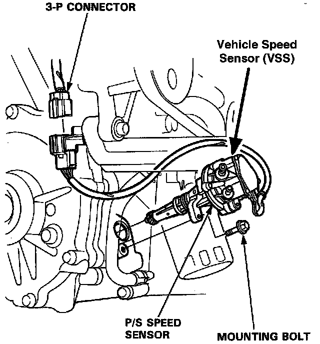

Vehicle Speed Sensor: Service and Repair
Vehicle Speed Sensor (VSS):

1. Disconnect the 3 pin connector from the Vehicle Speed Sensor (VSS).
2. Remove the mounting bolt, then take out the VSS/Power Steering (P/S) speed sensor assembly.
3. Install in the reverse order of removal and tighten the mount bolt to: 12 Nm (9 lb-ft).
4. If the power steering hoses on the sensor were removed, turn the steering wheel from lock-to-lock with the engine idling to bleed air from the system. Top off the power steering fluid as necessary with factory approved fluid.